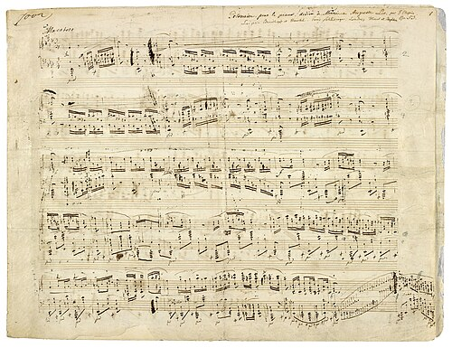
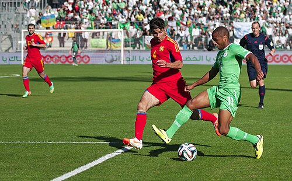
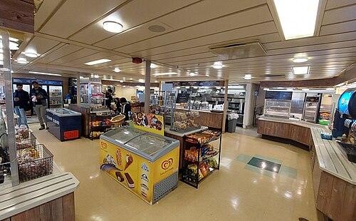

🟥 Term 3 — MCQ Mock Test 1
25 multiple‑choice questions on school subjects & opinions, teachers, what's in your school, the timetable and telling the time. Answer first, then open the arrow.
Q1. What does las matemáticas mean?
- A) science
- B) maths
- C) music
- D) history
▶ Answer & explanation
The question means: Translate las matemáticas. ✅ Correct: B) maths
- 🇬🇧 maths
- 🇪🇸 las matemáticas (plural). (las ciencias = science, la música = music, la historia = history)
Q2. Which subject is la geografía?
- A) history
- B) geography
- C) biology
- D) chemistry
▶ Answer & explanation
The question means: Translate la geografía. ✅ Correct: B) geography
- 🇬🇧 geography
- 🇪🇸 la geografía (la historia = history, la biología = biology, la química = chemistry)
Q3. Look at the picture. What subject is this?

- A) el arte
- B) la música
- C) el teatro
- D) la tecnología
▶ Answer & explanation
The question means: Name the school subject in Spanish. ✅ Correct: B) la música
- 🇬🇧 music
- 🇪🇸 la música (el arte = art, el teatro = drama, la tecnología = technology)
Q4. Me gusta el inglés means…
- A) I hate English
- B) I like English
- C) I love English
- D) I prefer English
▶ Answer & explanation
The question means: Translate Me gusta el inglés. ✅ Correct: B) I like English
- 🇬🇧 I like English
- 🇪🇸 Me gusta = I like. (Odio = I hate, Me encanta = I love, Prefiero = I prefer)
Q5. Which means I love…?
- A) No me gusta
- B) Odio
- C) Me encanta
- D) Prefiero
▶ Answer & explanation
The question means: Which phrase means "I love"? ✅ Correct: C) Me encanta
- 🇬🇧 I love
- 🇪🇸 Me encanta (No me gusta = I don't like, Odio = I hate, Prefiero = I prefer)
Q6. Odio las ciencias means…
- A) I like science
- B) I love science
- C) I hate science
- D) I study science
▶ Answer & explanation
The question means: Translate Odio las ciencias. ✅ Correct: C) I hate science
- 🇬🇧 I hate science
- 🇪🇸 Odio = I hate.
Q7. Which adjective means boring?
- A) divertido
- B) aburrido
- C) interesante
- D) fácil
▶ Answer & explanation
The question means: Which word means "boring"? ✅ Correct: B) aburrido
- 🇬🇧 boring
- 🇪🇸 aburrido/a (divertido = fun, interesante = interesting, fácil = easy)
Q8. Me gusta la historia porque es interesante. Why does she like history?
- A) because it's easy
- B) because it's interesting
- C) because it's useful
- D) because it's fun
▶ Answer & explanation
The question means: Read the sentence and pick the reason. ✅ Correct: B) because it's interesting
- 🇬🇧 I like history because it's interesting
- 🇪🇸 porque es interesante = because it's interesting.
Q9. Which is correct: Me ___ las matemáticas (matemáticas is plural)?
- A) gusta
- B) gustan
- C) encanto
- D) gusto
▶ Answer & explanation
The question means: Choose gusta or gustan for a plural subject. ✅ Correct: B) gustan
- 🇬🇧 I like maths
- 🇪🇸 Me gustan las matemáticas — plural subject → gustan. (One subject → gusta: Me gusta el arte.)
Q10. Look at the picture. What subject is this?

- A) la educación física
- B) la informática
- C) la religión
- D) el arte
▶ Answer & explanation
The question means: Name the school subject in Spanish. ✅ Correct: A) la educación física
- 🇬🇧 P.E. (physical education)
- 🇪🇸 la educación física (informática = ICT, religión = RE, arte = art)
Q11. What does Mi asignatura favorita es el arte mean?
- A) My favourite subject is art
- B) My favourite teacher is art
- C) I don't like art
- D) Art is difficult
▶ Answer & explanation
The question means: Translate the sentence. ✅ Correct: A) My favourite subject is art
- 🇬🇧 My favourite subject is art
- 🇪🇸 asignatura favorita = favourite subject.
Q12. Which means My maths teacher is strict?
- A) Mi profesor de matemáticas es simpático
- B) Mi profesor de matemáticas es estricto
- C) Mi profesora de inglés es estricta
- D) Mi profesor de matemáticas es divertido
▶ Answer & explanation
The question means: Choose the sentence meaning "My maths teacher is strict". ✅ Correct: B) Mi profesor de matemáticas es estricto
- 🇬🇧 My maths teacher is strict
- 🇪🇸 estricto = strict. (simpático = nice, divertido = fun)
Q13. Mi profesora de música es muy paciente. What does paciente mean?
- A) strict
- B) patient
- C) funny
- D) boring
▶ Answer & explanation
The question means: Translate the adjective paciente. ✅ Correct: B) patient
- 🇬🇧 patient
- 🇪🇸 paciente = patient.
Q14. En mi instituto hay una biblioteca means…
- A) In my school there is a library
- B) In my school there is a gym
- C) My school has no library
- D) I like the library
▶ Answer & explanation
The question means: Translate the sentence. ✅ Correct: A) In my school there is a library
- 🇬🇧 In my school there is a library
- 🇪🇸 hay = there is/are; biblioteca = library.
Q15. Look at the picture. What is this place?

- A) la biblioteca
- B) el comedor
- C) el gimnasio
- D) el patio
▶ Answer & explanation
The question means: Name this place in a school, in Spanish. ✅ Correct: B) el comedor
- 🇬🇧 the canteen / dining hall
- 🇪🇸 el comedor (biblioteca = library, gimnasio = gym, patio = playground)
Q16. Which means There isn't a swimming pool?
- A) Hay una piscina
- B) No hay piscina
- C) Hay un gimnasio
- D) No hay biblioteca
▶ Answer & explanation
The question means: Choose "There isn't a swimming pool". ✅ Correct: B) No hay piscina
- 🇬🇧 There isn't a swimming pool
- 🇪🇸 No hay = there isn't/aren't; piscina = swimming pool.
Q17. ¿Qué hora es? is asking…
- A) What day is it?
- B) What time is it?
- C) What subject is it?
- D) What is your name?
▶ Answer & explanation
The question means: What is ¿Qué hora es? asking? ✅ Correct: B) What time is it?
- 🇬🇧 What time is it?
- 🇪🇸 You answer Es la una or Son las…
Q18. How do you say It's one o'clock?
- A) Son las una
- B) Es la una
- C) Son la una
- D) Es las una
▶ Answer & explanation
The question means: Choose the correct way to say "It's 1 o'clock". ✅ Correct: B) Es la una
- 🇬🇧 It's one o'clock
- 🇪🇸 Es la una — only 1 o'clock uses Es la; all other hours use Son las.
Q19. What time is Son las tres y media?
- A) 3:15
- B) 3:30
- C) 2:30
- D) 3:45
▶ Answer & explanation
The question means: Read the time and pick the clock time. ✅ Correct: B) 3:30
- 🇬🇧 It's half past three
- 🇪🇸 y media = half past. (y cuarto = quarter past, menos cuarto = quarter to)
Q20. How do you say quarter to five?
- A) Son las cinco y cuarto
- B) Son las cinco menos cuarto
- C) Son las cuatro y media
- D) Son las cinco en punto
▶ Answer & explanation
The question means: Choose "quarter to five". ✅ Correct: B) Son las cinco menos cuarto
- 🇬🇧 It's quarter to five
- 🇪🇸 menos cuarto = quarter to.
Q21. Los lunes tengo historia a primera hora. What does it mean?
- A) On Mondays I have history first lesson
- B) On Tuesdays I have history
- C) I like history
- D) History is at three o'clock
▶ Answer & explanation
The question means: Translate the timetable sentence. ✅ Correct: A) On Mondays I have history first lesson
- 🇬🇧 On Mondays I have history first lesson
- 🇪🇸 Los lunes = on Mondays, a primera hora = first lesson.
Q22. ¿Cuál es tu asignatura favorita? is asking…
- A) What is your favourite day?
- B) What is your favourite subject?
- C) What time is your lesson?
- D) Who is your teacher?
▶ Answer & explanation
The question means: What is this question asking? ✅ Correct: B) What is your favourite subject?
- 🇬🇧 What is your favourite subject?
- 🇪🇸 asignatura = subject; favorita = favourite.
Q23. Which is the odd one out (not a school subject)?
- A) la química
- B) el comedor
- C) la geografía
- D) el teatro
▶ Answer & explanation
The question means: Three are subjects; one is not. ✅ Correct: B) el comedor
- 🇬🇧 el comedor = the canteen (a place), not a subject.
- 🇪🇸 química = chemistry, geografía = geography, teatro = drama.
Q24. Choose the correct verb: Me ___ el arte porque es divertido.
- A) gustan
- B) gusta
- C) encantan
- D) odio
▶ Answer & explanation
The question means: Fill the gap in "I like art because it's fun" (art = one subject). ✅ Correct: B) gusta
- 🇬🇧 I like art because it's fun
- 🇪🇸 Me gusta el arte — one subject → gusta.
Q25. Prefiero la informática porque es útil. What is true?
- A) She hates ICT
- B) She prefers ICT because it's useful
- C) She prefers ICT because it's boring
- D) She likes art
▶ Answer & explanation
The question means: Read and choose the true statement. ✅ Correct: B) She prefers ICT because it's useful
- 🇬🇧 I prefer ICT because it's useful
- 🇪🇸 Prefiero = I prefer, la informática = ICT, útil = useful.
🏁 Your score: ____ / 25
- 22–25: ¡Excelente! 🌟 · 17–21: ¡Muy bien! · Under 17: re‑read the Term 3 guide.
➡️ Next: Term 3 — MCQ Mock 2